<!DOCTYPE html>
<html lang="en">
<head>
  <meta charset="utf-8">
  <meta name="viewport" content="width=device-width, initial-scale=1">
  <title>Co-evolution-based prediction of metal-binding sites in prot — solab</title>
  <meta name="description" content="Co-evolution-based prediction of metal-binding sites in proteomes by machine learning">
  <link rel="stylesheet" href="../../assets/css/style.css">
  <link rel="stylesheet" href="../../assets/css/paper.css">
  <link rel="icon" type="image/svg+xml" href="../../assets/favicon.svg">
  <meta property="og:type" content="article">
  <meta property="og:site_name" content="solab — Ovchinnikov Lab">
  <meta property="og:title" content="Co-evolution-based prediction of metal-binding sites in prot — solab">
  <meta property="og:description" content="Co-evolution-based prediction of metal-binding sites in proteomes by machine learning">
</head>
<body>
  <header class="site-header">
    <nav class="nav">
      <a class="brand" href="../../">solab</a>
      <button class="nav-toggle" aria-label="Toggle navigation" onclick="document.getElementById('navlinks').classList.toggle('open')">&#9776;</button>
      <ul class="nav-links" id="navlinks">
        <li><a href="../../">Home</a></li>
        <li><a href="../../lab/">Lab</a></li>
        <li><a href="../../research/">Research</a></li>
        <li><a href="../../publications/" class="active">Publications</a></li>
        <li><a href="../../tools/">Tools</a></li>
        <li><a href="../../resources/">Resources</a></li>
        <li><a href="../../contact/">Contact</a></li>
      </ul>
    </nav>
  </header>

  <main>
    <div class="paper-layout paper--with-toc">
      <nav class="paper-toc" aria-label="Contents">
        <p class="paper-toc-head">Contents</p>
        <ul>
          <li class="lvl2" data-section="sec-0-introduction"><a href="#sec-0-introduction">Introduction</a></li>
          <li class="lvl2" data-section="sec-0-results"><a href="#sec-0-results">Results</a></li>
          <li class="lvl3" data-parent="sec-0-results"><a href="#sec-4-prediction-of-co-evolved-metal-binding-r">Prediction of co-evolved metal-binding residue pairs</a></li>
          <li class="lvl3" data-parent="sec-0-results"><a href="#sec-5-overall-workflow-of-metalnet">Overall workflow of MetalNet</a></li>
          <li class="lvl3" data-parent="sec-0-results"><a href="#sec-6-prediction-of-metal-binding-sites-in-pro">Prediction of metal-binding sites in prokaryotic proteomes</a></li>
          <li class="lvl3" data-parent="sec-0-results"><a href="#sec-7-prediction-from-a-metagenome-enhanced-pf">Prediction from a metagenome-enhanced Pfam database</a></li>
          <li class="lvl3" data-parent="sec-0-results"><a href="#sec-8-assembling-co-evolved-metal-binding-pair">Assembling co-evolved metal-binding pairs into network</a></li>
          <li class="lvl3" data-parent="sec-0-results"><a href="#sec-9-prediction-of-metalloproteins-from-human">Prediction of metalloproteins from human spliceosome</a></li>
          <li class="lvl2" data-section="sec-10-discussion"><a href="#sec-10-discussion">Discussion</a></li>
          <li class="lvl3" data-parent="sec-10-discussion"><a href="#sec-11-online-content">Online content</a></li>
          <li class="lvl2" data-section="sec-12-methods"><a href="#sec-12-methods">Methods</a></li>
          <li class="lvl3" data-parent="sec-12-methods"><a href="#sec-13-benchmark-set-of-known-metal-binding-pro">Benchmark set of known metal-binding proteins from PDB</a></li>
          <li class="lvl3" data-parent="sec-12-methods"><a href="#sec-14-training-set-for-ml">Training set for ML</a></li>
          <li class="lvl3" data-parent="sec-12-methods"><a href="#sec-15-training-of-the-ml-model">Training of the ML model</a></li>
          <li class="lvl3" data-parent="sec-12-methods"><a href="#sec-16-identification-of-co-evolved-network-clu">Identification of co-evolved network clusters</a></li>
          <li class="lvl3" data-parent="sec-12-methods"><a href="#sec-17-construction-of-the-co-evolved-network-p">Construction of the co-evolved network pattern bank</a></li>
          <li class="lvl3" data-parent="sec-12-methods"><a href="#sec-18-comparison-of-metalnet-and-mib">Comparison of MetalNet and MIB</a></li>
          <li class="lvl3" data-parent="sec-12-methods"><a href="#sec-19-dataset-of-four-prokaryotic-species">Dataset of four prokaryotic species</a></li>
          <li class="lvl3" data-parent="sec-12-methods"><a href="#sec-20-uniprot-annotation">UniProt annotation</a></li>
          <li class="lvl3" data-parent="sec-12-methods"><a href="#sec-21-direct-structural-evidence-for-metalnet">Direct structural evidence for MetalNet predictions</a></li>
          <li class="lvl3" data-parent="sec-12-methods"><a href="#sec-22-indirect-evidence-to-support-metalnet-pr">Indirect evidence to support MetalNet predictions</a></li>
          <li class="lvl3" data-parent="sec-12-methods"><a href="#sec-23-metagenome-pfam-dataset">Metagenome-pfam dataset</a></li>
          <li class="lvl3" data-parent="sec-12-methods"><a href="#sec-24-human-spliceosome-dataset">Human spliceosome dataset</a></li>
          <li class="lvl3" data-parent="sec-12-methods"><a href="#sec-25-molecular-cloning">Molecular cloning</a></li>
          <li class="lvl3" data-parent="sec-12-methods"><a href="#sec-26-protein-expression-and-purification">Protein expression and purification</a></li>
          <li class="lvl3" data-parent="sec-12-methods"><a href="#sec-27-circular-dichroism">Circular dichroism</a></li>
          <li class="lvl3" data-parent="sec-12-methods"><a href="#sec-28-thermal-shift-assay">Thermal shift assay</a></li>
          <li class="lvl3" data-parent="sec-12-methods"><a href="#sec-29-gel-analysis-of-wild-type-proteins-and-v">Gel analysis of wild-type proteins and variants</a></li>
          <li class="lvl3" data-parent="sec-12-methods"><a href="#sec-30-icp-ms">ICP-MS</a></li>
          <li class="lvl3" data-parent="sec-12-methods"><a href="#sec-31-modeling-the-structure-of-citx-with-meta">Modeling the structure of citX with metal binding</a></li>
          <li class="lvl3" data-parent="sec-12-methods"><a href="#sec-32-crystallization-of-citx">Crystallization of citX</a></li>
          <li class="lvl3" data-parent="sec-12-methods"><a href="#sec-33-x-ray-data-collection-and-structure-dete">X-ray data collection and structure determination</a></li>
          <li class="lvl3" data-parent="sec-12-methods"><a href="#sec-34-molecular-dynamics">Molecular dynamics</a></li>
          <li class="lvl2"><a href="#references">References</a></li>
        </ul>
      </nav>
    <article class="paper">
      <p class="paper-eyebrow"><a href="../../publications/#prediction">Protein Structure Prediction</a></p>
      <h1 class="paper-title">Co-evolution-based prediction of metal-binding sites in proteomes by machine learning</h1>
      <p class="paper-authors">Cheng Y, Wang H, Xu H et al.</p>
      <p class="paper-meta">2023 · Nature Chemical Biology, 19 (5), pp.548-555.</p>
      <p class="paper-links"><a class="pill" href="https://doi.org/10.1038/s41589-022-01223-z">DOI</a> <a class="pill" href="https://www.nature.com/articles/s41589-022-01223-z">Publisher</a></p>

      <div class="paper-body paper-body--plain">
<h2 id="sec-0-introduction" data-synthetic="1">Introduction</h2>
<p data-node="g2-b8276f">Metal ions have indispensable roles in many biological processes. Owing to their unique physical and chemical properties, metal ions are frequently exploited to stabilize protein structures and as cofactors in proteins to aid catalysis of biochemical reactions and transductions <a class="paper-cite" href="#ref-b0">1</a> . It has been estimated that more than one-third of the entire proteomes are metal-binding proteins; however, given that only a few amino acid residues are normally involved in metal binding, it is not an easy task to generally predict metal-binding proteins <a class="paper-cite" href="#ref-b1">2</a> . Discovery and functional characterization of new metal-binding proteins in proteomes will therefore be of great interest for both basic biology and industrial applications in the postgenome era.</p>
<p data-node="g3-62732e">To hold specific metal ions in a stable and energetically favorable manner, metalloproteins across all species have evolved topologically similar metal-binding sites in their structures to meet the chemical and geometric bonding requirements <a class="paper-cite" href="#ref-b2">3</a> . Over the decades, both structural observations and theoretical calculations have accumulated detailed knowledge to accurately describe the rules of binding geometry and valence for different metal ions <a class="paper-cite" href="#ref-b3">4</a> . More recently, researchers have explored metal-binding proteins directly in proteomes using other experimental methods including inductively coupled plasma mass spectrometry (ICP-MS) 5 , activity-based protein profiling 6 and metal isotope native radio autography in gel electrophoresis 7 .</p>
<h2 id="sec-0-results" data-synthetic="1">Results</h2>
<h3 id="sec-4-prediction-of-co-evolved-metal-binding-r" data-node="g3-62732e-ins2">Prediction of co-evolved metal-binding residue pairs</h3>
<p data-node="g18-915e5f">Article the residue compositions and topology of a predicted co-evolution network with existing patterns in the co-evolution motif bank and assign the possible type of metal ion bound (Fig. <a class="paper-cite" href="#figure-2">2</a>).</p>
<h3 id="sec-5-overall-workflow-of-metalnet" data-node="g19-4738bd">Overall workflow of MetalNet</h3>
<p data-node="g20-c5266a">We combined the ML-based classifier and the graph-based network detection to streamline the workflow of our method, named &#x27;MetalNetʼ (Extended Data Fig. <a class="paper-cite" href="#figure-5">5</a>). For a POI, we first obtained its multiple sequence alignment (MSA) and calculated its co-evolution contact. Next, we extracted all co-evolved CHED residue pairs from the contact map, and for each pair, we fed its pairwise frequency matrix to the ML model to determine whether it binds metals. We proceeded to apply the graph filter to detect connected sub-network clusters and keep one pair with the highest predicted possibility by ML model if no pairs are left after graph filter (Extended Data Fig. <a class="paper-cite" href="#figure-5">5</a>). As a result, we obtain one or more co-evolution clusters within the POI, each of which represents a potential metal-binding site. Whenever possible, we use the residue composition and topology information of the network cluster to aid annotation of the type of metal ion bound in this specific site. Overall, the method needs only the MSA-derived co-evolution information as the input and does not rely on any sequence or structural motifs to make predictions.</p>
<figure class="paper-fig" id="figure-5" data-node="g905-c6e742-ins1">
  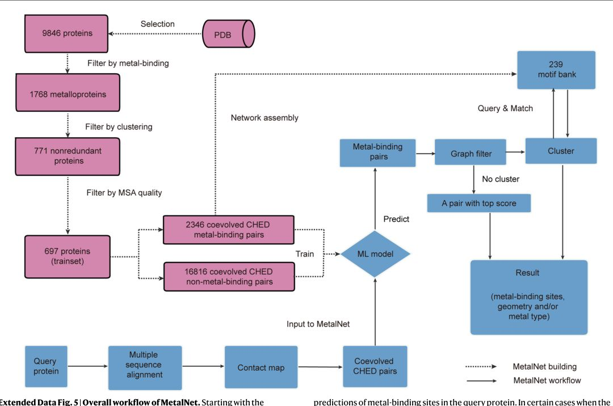
  <figcaption><b>Extended Data Fig. 5 |</b> Overall workflow of MetalNet. Starting with the information from coevolution analysis, MetalNet uses a machine learning (ML)-based classifier that has been trained by a benchmark of known metalloproteins to predict whether an individual CHED coevolved residue pair is metal-binding or not. It then employs a graph-based approach to identify high-order coevolution network clusters formed by these coevolved CHED pairs to generate reliable predictions of metal-binding sites in the query protein. In certain cases when the coevolution network topology can be matched to that of known metal-binding sites, the method can also infer the information on the type of metal bound in the predicted site. The method does not use any sequence (1D) or structural (3D) homology information to make predictions</figcaption>
</figure>
<p data-node="g21-21557c">We briefly compared the performance of MetalNet with a well-known structure-based prediction method MIB <a class="paper-cite" href="#ref-b12">13</a> . We collected metalloproteins that have been released recently in PDB so that they are &#x27;newʼ to both MetalNet and MIB and used them as an unbiased testing dataset (Supplementary Dataset 3). Overall, MetalNet shows better precision and MIB has a better recall, resulting in comparable F1 score performance between them (Extended Data Fig. <a class="paper-cite" href="#figure-6">6</a>). Considering that these methods take sequence co-evolution and structure information as input, respectively, it will be worth integrating their features together to enhance the prediction power in future.</p>
<figure class="paper-fig" id="figure-6" data-node="g906-80d7bf-ins1">
  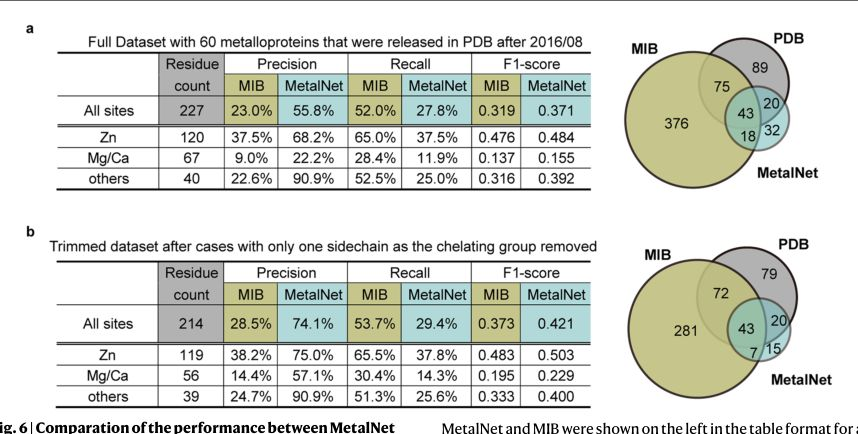
  <figcaption><b>Extended Data Fig. 6 |</b> Comparation of the performance between MetalNet and MIB. a, Evaluation of the performance of MetalNet and MIB on a &#x27;prospective&#x27; metalloprotein dataset that were deposited in PDB after 2016/08. b, Evaluation of the performance of MetalNet and MIB on this prospective metalloprotein dataset after proteins with one single sidechain as the liganding group were removed. In a and b, the calculated precision, recall and F1-scores for MetalNet and MIB are shown on the left in the table format, and the Venn diagrams of the predictions are shown on the right</figcaption>
</figure>
<h3 id="sec-6-prediction-of-metal-binding-sites-in-pro" data-node="g22-5ce7b8">Prediction of metal-binding sites in prokaryotic proteomes</h3>
<p data-node="g23-cdca51">We applied MetalNet to predict metalloproteins in four prokaryotic proteomes, including Escherichia coli, Bacillus subtilis, Saccharolobus solfataricus and Halobacterium salinarum, which currently have 1,965 annotated metalloproteins. MetalNet predicted a total of 4,849 potential metalloproteins in these species (Fig. <a class="paper-cite" href="#figure-3">3a</a> and Supplementary Dataset 4). Moreover, MetalNet found 1,603 network clusters and we were able to match the co-evolution network patterns for 973 of them so that their metal types could be inferred by analogy to existing metalloproteins (Supplementary Dataset 4).</p>
<figure class="paper-fig" id="figure-3" data-node="g23-cdca51-ins1">
  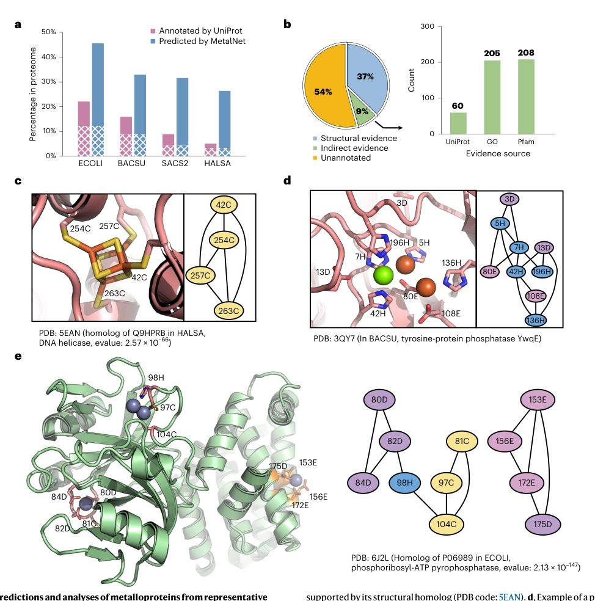
  <figcaption><b>Fig. 3 |</b> Predictions and analyses of metalloproteins from representative prokaryotic species. a, The percentage of predicted metalloproteins by MetalNet (blue) and annotated proteins by UniProt (pink) within each proteome. The overlapping proteins are highlighted in the white-patch pattern. ECOLI: E. coli; BACUS: B. subtilis; SACS2: S. solfataricus; HALSA: H. salinarum. b, Part of MetalNet predictions can be supported by either direct structural evidence or indirect evidence from various sources, which include UniProt annotations, Gene Ontology annotations and Pfam annotations. c, Example of a predicted mononuclear iron-sulfur cluster binding protein from H. salinarum, which is supported by its structural homolog (PDB code: 5EAN). d, Example of a predicted multinuclear site in YwqE from B. subtilis, which is supported by the structure in PDB (code: 3QY7). e, Example of three separate zinc-binding sites, which is supported by its structural homolog (PDB code: 6J2L). In c-e, crystal structures of corresponding metalloprotein are shown in cartoon and the predicted metal-binding sites are shown as network. Metal-chelating residues are shown in sticks and metals bound are shown in either sticks (iron-sulfur cluster in yellow and brown) or spheres (magnesium in green, iron in brown and zinc in gray)</figcaption>
</figure>
<p data-node="g24-469625">We first sought direct structural evidence to support our predictions. For each of the predicted metalloproteins, we searched its homologs by PDB-BLAST 33 and found that 37% (1,810 of 4,849) of the predictions could be supported by experimental structures (Fig. 3b ). Among these predictions, we not only observed classical short sequence mot<a class="paper-cite" href="#ref-b33">if</a>s such as C2H2 in zinc fingers and CXXCXXCC in certain iron-sulfur-binding proteins but also found cases wit<a class="paper-cite" href="#figure-3">h </a>metal-chelating residues by &gt;100 amino acids apart in sequence (Fig. 3c ) or with complexed co-evolved networks corresponding to multinuclear or multiple metal-binding sites (Fig. 3d , e ). Collectively, these examples highlighted the power of MetalNet in di<a class="paper-cite" href="#figure-3">sc</a>overing complex metal-binding sites from proteins independent from 1D sequences or 3D structural motifs.<a class="paper-cite" href="#figure-3"></a></p>
<p data-node="g25-49ab7a">For the rest of the predicted proteins that do not have direct structural evidence, we searched for indirect but relevant evidence from various databases to further support our predictions 1,<a class="paper-cite" href="#ref-b7">8</a> , including UniProt, Gene Ontology and Pfam (Fig. <a class="paper-cite" href="#figure-3">3b</a>). Collectively, an additional 445 predicted proteins can be supported by at least one piece of this indirect evidence (Fig. <a class="paper-cite" href="#figure-3">3b</a>), accounting for 9% of the total predictions. Lastly, there are 2,594 predicted proteins that have never been annotated previously as metalloproteins (Supplementary Dataset 4). We envision that these MetalNet predictions will greatly facilitate functional annotations of uncharacterized metalloproteomes in these species.</p>
<h3 id="sec-7-prediction-from-a-metagenome-enhanced-pf" data-node="g26-f30945">Prediction from a metagenome-enhanced Pfam database</h3>
<p data-node="g4-dea3f6">The results suggested that we could in principle incorporate the co-evolution information into a prediction model to differentiate metal-binding residue pairs from nonbinding ones.</p>
<p data-node="g5-85dd16">To systematically formulate this approach, we generated a &#x27;pairwise frequency matrix&#x27; for every CHED co-evolved residue pair in the contact map. The 21 × 21 matrix is calculated based on the residue-residue frequency profile observed in the homologous sequences for this given pair (20 amino acids and one more position gap). We averaged the matrices for all the metal-binding and nonbinding residue pairs, respectively, and observed very distinct patterns between them (Fig.<a class="paper-cite" href="#figure-1"> 1</a>d ). For example, the metal-binding pairs have much more enriched signals in the CHED region whereas signals for the nonbinding pairs are dispersed throughout the whole matrix. We reasoned that such pattern differences can be transformed into a classification problem that is addressable by ML.</p>
<figure class="paper-fig" id="figure-1" data-node="g108-f5f2e3">
  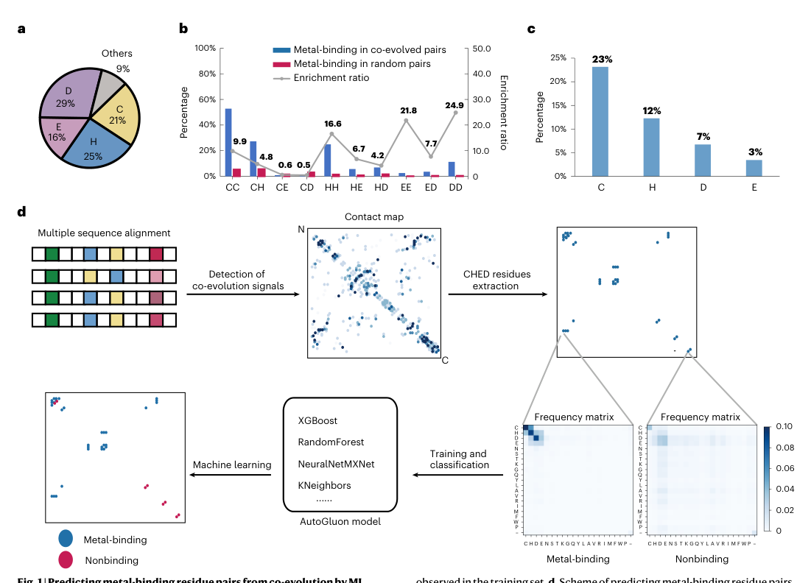
  <figcaption><b>Fig. 1 |</b> Predicting metal-binding residue pairs from co-evolution by ML. a, Classification of metal-chelating residues by amino acid types, showing CHED accounting for 91% of all the metal-chelating residues. b, Co-evolved residue pairs are more enriched with metal binding. For each of the ten CHED pairwise combinations, the percentage of co-evolved pairs observed with metal binding (blue bar) and the percentage of metal-binding pairs in randomly picked residue pairs (red bar) were calculated. Gray line shows the enrichment ratios. c, Percentage of CHED residue type, which is involved in metal-binding as observed in the training set. d, Scheme of predicting metal-binding residue pairs based on the co-evolution information using ML. Starting with MSA, all CHED co-evolved pairs were extracted from the contact map and their pairwise residue-composition frequency matrices were used to train a model to predict whether a co-evolved pair is metal-binding for every CHED co-evolved residue pair in the contact map. The 21 × 21 pairwise frequency matrix is calculated based on the residue-residue frequency profile observed in the homologous sequences</figcaption>
</figure>
<p data-node="g6-e9e683">We compiled a nonredundant list of 697 metalloproteins from the aforementioned dataset that cover ten types of metals (ZN, CA, MG, MN, FE, SF4, NI, CU, CO and FES in Extended Data Fig. <a class="paper-cite" href="#figure-1">1</a>) and defined a total of 2,346 co-evolved metal-binding CHED pairs in these proteins as the positive samples (Supplementary Dataset 1). We also defined another set of 16,816 co-evolved but nonmetal-binding CHED pairs from the same set as the negative samples (Supplementary Dataset 1). We calculated the pairwise frequency matrices of every pair and used AutoGluon (<a href="https://auto.gluon.ai/stable/index.html">https://auto.gluon.ai/stable/index.html</a>) to train several ML models and evaluated the performance with the 5-fold cross-validation test. The final model exhibited the performance with an area under the Receiver Operating Characteristic Curve (AUC) of 0.88, F1 score of 0.66 and Matthews Correlation Coefficient (MCC) of 0.63 (Supplementary Table 1).</p>
<h3 id="sec-8-assembling-co-evolved-metal-binding-pair" data-node="g7-808d31">Assembling co-evolved metal-binding pairs into network</h3>
<p data-node="g8-1c6b21">During investigating the co-evolution network of proteins in the benchmark, we observed that many metal-binding co-evolved pairs assemble to form an integrated network (Extended Data Fig. <a class="paper-cite" href="#figure-2">2</a> ). This is consistent with a previous report that residues within a functional site have the tendency to cluster together in a co-evolution network<a class="paper-cite" href="#ref-b29"> 2</a>9 . To quantify whether metal-binding residues are more frequently engaged in a connected co-evolution network, we calculated the number of co-evolved connections (&#x27;node degree&#x27;) for every CHED residue. The results showed that the metal-binding residues indeed have higher node degrees on average than the nonbinding ones (Extended Data Fig.<a class="paper-cite" href="#figure-3"> </a>3 ). We reasoned that detecting such networks should help improve the precision of our prediction (Fig<a class="paper-cite" href="#figure-2">.</a> 2 ). We therefore implemented a graph-based approach to detect co-evolution network clusters from the predicted metal-binding residue pairs by trimming off those &#x27;singleton&#x27; pairs (Methods). As expected, applying the graph filter resulted in an improved F1 score of the prediction (Supplementary Table 2 ).</p>
<figure class="paper-fig" id="figure-2" data-node="g109-090d79">
  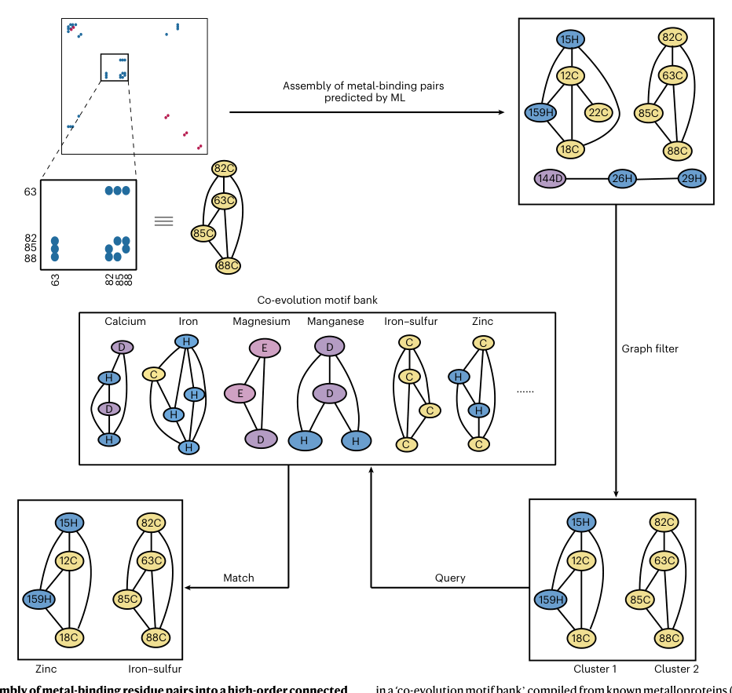
  <figcaption><b>Fig. 2 |</b> Assembly of metal-binding residue pairs into a high-order connected co-evolution network by graph theory. Co-evolved metal-binding residue pairs predicted by ML model are assembled into a high-order co-evolution network, and the connected sub-networks are then detected by graph theory. The &#x27;singleton&#x27; pairs are discarded, which can serve as a filter to increase the prediction precision. Finally, the predicted sub-network clusters are queried in a &#x27;co-evolution motif bank&#x27; compiled from known metalloproteins (histidine in blue, cysteine in yellow, aspartic acid in purple and glutamic acid in pink), which will enable prediction of the type of metal ions bound. It should be noted that one metal type might have multiple corresponding network motifs in the bank</figcaption>
</figure>
<p data-node="g9-135fa0">To recover certain sites with fewer sidechain liganding residues such as Mg/Ca-binding sites (Extended Data Fig. <a class="paper-cite" href="#figure-4">4</a>), we added a &#x27;repechageʼ rule that when there are no residues left after applying the graph filter, we would keep the top N pair with the highest predicted possibility from those which do not pass the filter. We systematically evaluated the F1 scores with N varying from 1 to 5 and the results showed that recovery of the single top-ranking pair by the repechage rule yielded the best F1 score (Supplementary Table 2). We therefore settled on this parameter and assigned the best-predicted pair as potential metal-binding sites if no co-evolved networks are detected.</p>
<p data-node="g10-147b88">Interestingly, among the extracted co-evolution networks, we also observed different network patterns for sites with different types of metal bound (Fig. <a class="paper-cite" href="#figure-2">2</a> ). We compiled such patterns from known metalloproteins to construct a metal-type-dependent architecture database of co-evolution networks (&#x27;co-evolution motif bank&#x27;; Supplementary Dataset 2). Because different metal ions have their preferred co-evolution network architecture, it should be possible to compare the residue compositions and topology of a predicted co-evolution network with existing patterns in the co-evolution motif bank and assign the possibl<a class="paper-cite" href="#ref-b4">e</a> type of metal ion bound (Fig. 2 ).<a class="paper-cite" href="#ref-b5"></a><a class="paper-cite" href="#ref-b6"></a></p>
<p data-node="g27-d9bbdc">We next investigated whether evolutionary information extracted from metagenome sequencing data can enhance MetalNet predictions. We started with the MSAs that were previously calculated by GREMLIN to guide the structural modeling of 1,116 Pfam families by Rosetta (ref. <a class="paper-cite" href="#ref-b22">22</a> ). MetalNet predicted 175 metalloproteins with clusters and 60 of them have overlapping Rosetta models (Fig. <a class="paper-cite" href="#figure-4">4a</a> and Supplementary Dataset 5). Analysis of these models showed that residues within 46 predicted metal-binding sites are proximal to each other (Supplementary Dataset 5 and Supplementary Fig. <a class="paper-cite" href="#figure-1">1</a> ). Furthermore, the overall distribution of residue-residue distances was consistent with that calculated from known metalloproteins below 4.5 Å (Extended Data Fig. 7 ).</p>
<p data-node="g29-6ecd3a">We selected 21 MetalNet predictions for experimental validation, none of which has been reported with any metal-binding a<a class="paper-cite" href="#figure-7">c</a>tivities or homologs back then at that time. Five targets yielded reasonable expression in the initial screening including Rv3033, Desor_0198, SVEN_5263, cbrC and citX. Among them, Rv3033 (Uniprot code: I6YAY5 ) failed to be purified likely because it is predicted as an iron-sulfur cluster-binding protein. Purified Desor_0198 (UniProt code: G7W7J8 ) and SVEN_5263 (UniProt code: F2R5E5 ) showed zinc-binding signals by ICP-MS (Extended Data Fig. 8a , b ); however, their metal-binding site variants were unstable for purification. We therefore characterized the remain<a class="paper-cite" href="#figure-8">in</a>g two proteins, cbrC and citX, in detail by biochemical and/or structural methods.</p>
<figure class="paper-fig" id="figure-4" data-node="g29-6ecd3a-ins1">
  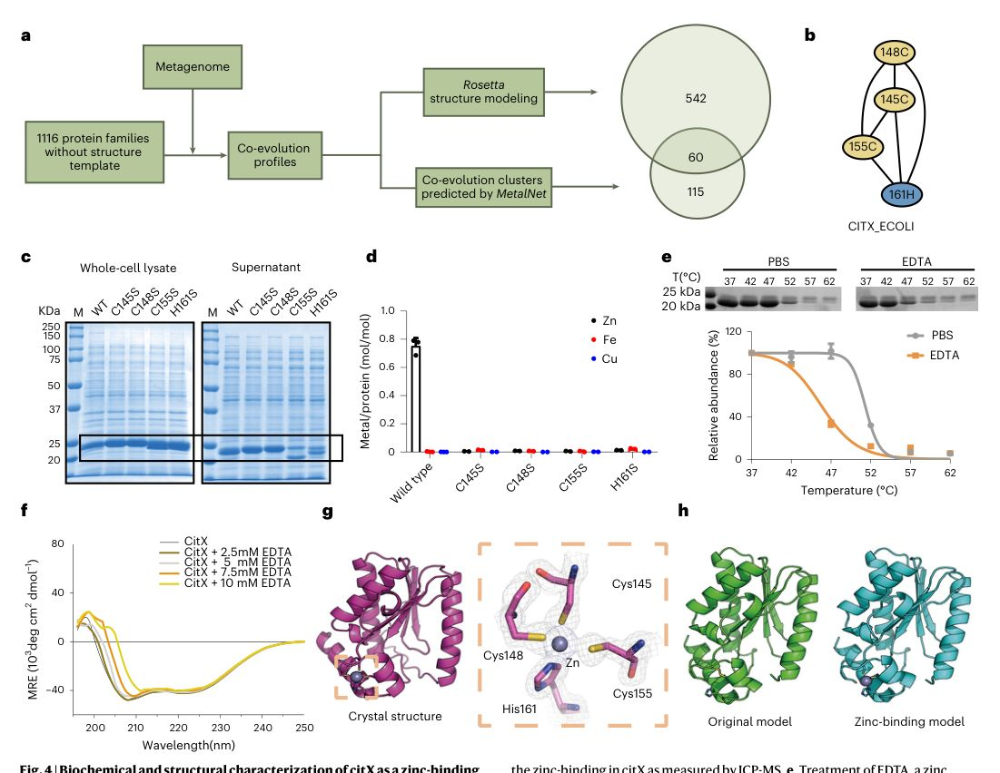
  <figcaption><b>Fig. 4 |</b> Biochemical and structural characterization of citX as a zinc-binding protein. a, Scheme of predicting metalloproteins from the Pfam families that lack existing structural homologs using metagenome-enhanced co-evolution. b, The predicted zinc-binding co-evolved network in citX by MetalNet. c, Variant of some of the predicted metal-binding residues compromised citX&#x27;s solubility. The wild-type and all four variants (C145S, C148S, C155S and H161S) showed similar protein abundance as demonstrated by Coomassie blue staining (highlighted in the black box). The experiment was repeated twice independently with similar results. d, Variant of the predicted metal-binding residues abolished the zinc-binding in citX as measured by ICP-MS. e, Treatment of EDTA, a zinc ion chelator, decreased citX&#x27;s thermal stability as measured by the thermal shift assay. In d and e, error bars represent mean and s.d. (n = 3 biologically independent samples). f, Circular dichroism measurement of the purified citX in presence of various concentrations of EDTA. g, Crystal structure of citX (PDB code: 7DCN) and the zoom-in view of the zinc-binding site confirms the prediction of MetalNet. h, Structural models of citX built by Rosetta with (right) and without (left) the predicted zinc-binding site into consideration</figcaption>
</figure>
<figure class="paper-fig" id="figure-7" data-node="g907-6bab71-ins1">
  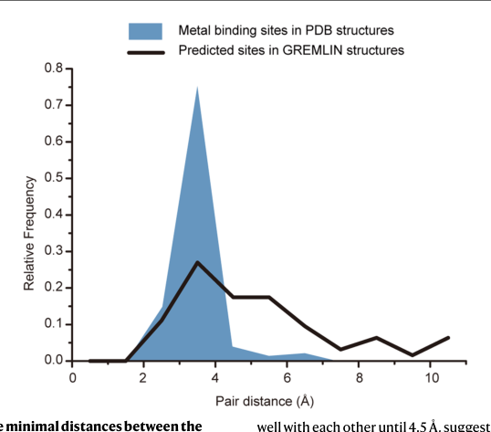
  <figcaption><b>Extended Data Fig. 7 |</b> Distribution of the minimal distances between the metal-binding residue pairs predicted by MetalNet. The blue block shows the distribution of residue-residue pairwise distances for metal-binding residues from known metalloproteins in the PDB database. Black solid lines show the distribution of mean distances in GREMLIN models for the metal-binding coevolved sites predicted by MetalNet. The distributions generally agree well with each other until 4.5 Å, suggesting that a large portion of MetalNet predictions indeed have metal-binding residues in proximity with each other. Since GREMLIN does not take metal-binding into consideration during structural modeling, the disagreement after 4.5 Å may come from either false positive prediction by MetalNet, or some errors in structural modeling by GREMLIN</figcaption>
</figure>
<figure class="paper-fig" id="figure-8" data-node="g908-c98845-ins1">
  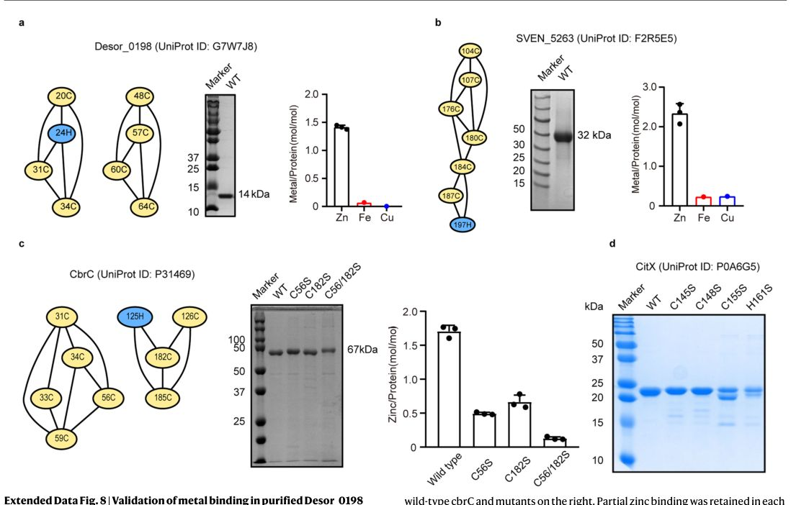
  <figcaption><b>Extended Data Fig. 8 |</b> Validation of metal binding in purified Desor_0198 (a), SVEN_5263 (b), CbrC (c) and CitX (d) by ICP-MS. For a and b, the coevolved metal-binding cluster predicted by MetalNet are shown on the left, SDS-PAGE of the purified wild-type protein in the middle and ICP-MS measurement of metal binding of the purified protein are shown on the right. Both proteins are validated with zinc-binding activity. c, The coevolved metal-binding cluster predicted by MetalNet are shown on the left, SDS-PAGE of the purified wild-type protein, two single mutants (C56S or C182S) and the double mutant (C56S&amp;C182S) in the middle and ICP-MS analysis of zinc binding in the purified wild-type cbrC and mutants on the right. d, SDS-PAGE of the purified wild-type citX and its four variants</figcaption>
</figure>
<p data-node="g30-1eaf74">The protein cbrC (UniProt code: P31469, Pfam: PF03691) is a CreB-regulated gene C protein in E. coli<a class="paper-cite" href="#ref-b34"> 3</a>4 . MetalNet predicted two potential metal-binding sites (Site 1: C31, C33, C34, C56 and C59; Site 2: H125, C126, C182 and C185) (Extended Data Fig.<a class="paper-cite" href="#figure-8"> 8</a>c ). We purified the wild-type protein, the single variant of C56S or C182S, as well as the double variant (Extended Data Fig<a class="paper-cite" href="#figure-8">. </a>8c ). ICP-MS analysis showed that the wild-type protein was bound with zinc and the measured metal to protein ratio was close to two, which is highly consistent with the MetalNet prediction. The zinc/protein ratios of the single variants, C56S and C182S, were measured as 0.481 and 0.628, respectively, and for the double variant of C56S/C182S, its metal-binding activity was completely abolished (Extended Data Fi<a class="paper-cite" href="#figure-8">g.</a> 8c ). The protein citX (UniProt code: P0A6G5, Pfam: PF03802) was annotated as an apo-citrate lyase phosphoribosyl-dephospho-CoA transferase in E. c<a class="paper-cite" href="#ref-b35">ol</a>i 35 . MetalNet identified a co-evolution network consisting of three cysteines (C145, C148 and C155) and one histidine H161 in citX (F<a class="paper-cite" href="#figure-4">ig</a>. 4b ), and the network topology confidently matches a zinc-binding site. We recombinantly overexpressed the wild-type citX and the single variants of the four metal-binding residues (C145S, C148S, C155S and H161S) in E. coli, and some of the single variants showed compromised solubility <a class="paper-cite" href="#figure-4">(F</a>ig. 4c ). After purification (Extended Dat<a class="paper-cite" href="#figure-8">a </a>Fig. 8d ), ICP-MS analysis confirmed that the wild-type protein specifically bound zinc but not iron or copper as expected from the prediction, and the measured metal to protein ratio was around 0.7 and none of the single variants showed detectable zinc-binding signal<a class="paper-cite" href="#figure-4">s </a>(Fig. 4d ). When the wild-type protein was treated with EDTA, a conventional metal-chelator, the thermal stability curve was shifted left compared with the sample treated with PBS, indicating the protein was destabilized upon metal extracti<a class="paper-cite" href="#figure-4">on</a> (Fig. 4e ). Circular dichroism analysis also showed that EDTA treatment would greatly perturb the protein&#x27;s conformat<a class="paper-cite" href="#figure-4">io</a>n (Fig. 4f ). Finally, we solved the structure of citX by X-ray crystallography (PDB code: 7DCM at 2.5 Å resolution determined by single-wavelength anomalous diffraction and PDB code: 7DCN at 1.7 Å resolution determined by molecular replacement; Supplementary Table 3 ). In the structure of 7DCN, distances between the zinc ion and the predicted chelating residues are 2.34 Å, 2.31 Å, 2.36 Å and 2.08 Å, which unambiguously proved that the predicted cysteines and histidine together form a tetrahedral zinc-binding site in<a class="paper-cite" href="#figure-4"> c</a>itX (Fig. 4g ). The crystal structure also matches well with a structural model we built by R<a class="paper-cite" href="#figure-4">os</a>etta (Fig. 4h ). To investigate structural and dynamic characteristics of citX and its variants, we also performed molecular dynamic (MD) simulations and the results showed that all the four variants had greater conformational fluctuations at the zinc-binding site, suggesting that the metal ion has a stabilizing effect for the protein (Extended Data<a class="paper-cite" href="#figure-9"> </a>Fig. 9 ).</p>
<figure class="paper-fig" id="figure-9" data-node="g909-09f1a3-ins1">
  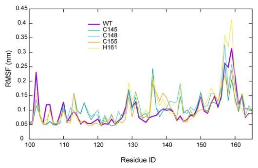
  <figcaption><b>Extended Data Fig. 9 |</b> Molecular dynamic (MD) simulations of citX and its mutants. MD simulations were performed to calculate root mean square fluctuation (RMSF) for citX (PDB ID: 7DCN ) and its mutants (C145S, C148S, C155S and H161S)</figcaption>
</figure>
<h3 id="sec-9-prediction-of-metalloproteins-from-human" data-node="g31-356a01">Prediction of metalloproteins from human spliceosome</h3>
<p data-node="g32-4b31c5">One major challenge of applying MetalNet to eukaryotic proteomes is the relatively poor quality of MSA due to the low depth of sequence information that is currently available from a limited number of eukaryotic species. To demonstrate that MetalNet is generally applicable to any type of proteome as long as the target protein has MSA with reasonable quality, we, as a proof of principle, attempted to apply MetalNet to the human spliceosome because the giant protein machinery is functionally conserved across almost all eukaryotic organisms <a class="paper-cite" href="#ref-b36">36</a> and multiple structures have been solved 37,<a class="paper-cite" href="#ref-b38">38</a> (Extended Data Fig. <a class="paper-cite" href="#figure-10">10</a>). We utilized deepMSA <a class="paper-cite" href="#ref-b39">39</a> to generate high-quality MSA from available sequences and applied MetalNet to finally predict 34 potential metal-binding sites from 33 spliceosome subunits (Supplementary Dataset 6). Notably, all zinc-binding sites that were observed in the experimental structures could be recapitulated by MetalNet (Extended Data Fig. <a class="paper-cite" href="#figure-10">10</a>) and other unannotated metal-binding sites remained biochemically and functionally validated.</p>
<figure class="paper-fig" id="figure-10" data-node="g910-c7fb09-ins1">
  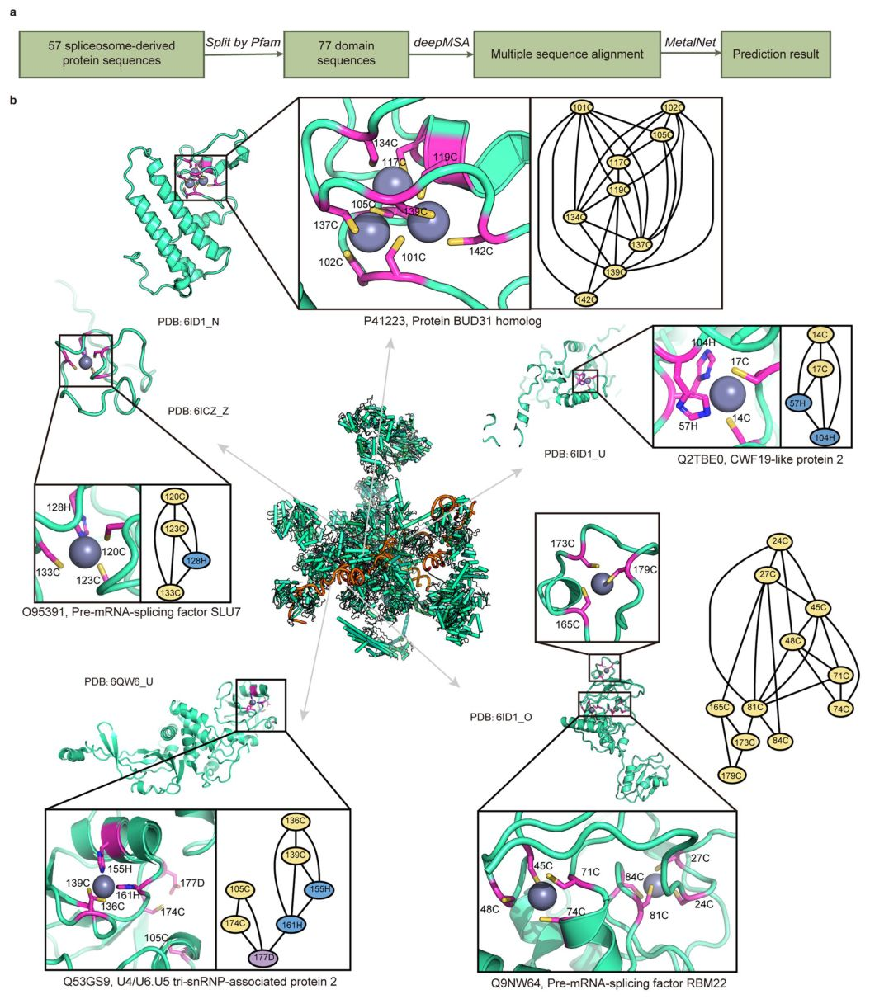
  <figcaption><b>Extended Data Fig. 10 |</b> Prediction of metal-binding sites in the human spliceosome. a, Scheme of predicting metal-binding sites in the human spliceosome using coevolution obtained by deepMSA and MSA transformer. b, Highlight of the zinc-binding sites in the human spliceosome predicted by MetalNet that match well with the experimental structures in PDB</figcaption>
</figure>
<h2 id="sec-10-discussion" data-node="g33-8fb937">Discussion</h2>
<p data-node="g34-12aed4">Generally speaking, co-evolved residues are likely to be closed in the 3D structure and therefore the co-evolution information has been extensively used in protein structure prediction. MetalNet focused on the co-evolved residues and harnessed such information for prediction of metal binding. MetalNet learned features based on co-evolution information using an ML model and made the predictions after applying a graph filter. For protein citX, we remodeled its structure with a zinc-binding site as predicted by MetalNet, and the new structural model accurately matches the crystal structure that was solved later (Fig. <a class="paper-cite" href="#figure-4">4g</a>,h). Such data encouragingly suggested that MetalNet predictions can serve as a good complement to guide protein structural determination of metalloproteins by both experimental and computational methods.</p>
<p data-node="g35-305994">For simplicity, MetalNet currently focused on metal-binding sites with CHED residues only. Intrinsically limited by the nature of sidechain co-evolution, MetalNet will not detect metal-binding sites with only one sidechain involved and therefore might make false negative predictions. Inevitably, this creates a bias against certain metal ions, such as Ca and Mg (Extended Data Fig. <a class="paper-cite" href="#figure-4">4</a>), whose chelating atoms often come from mainchain carbonyls, cofactors and waters. In addition, the graph filter might remove more potential sites with only two aminoacidic ligands. To alleviate the bias, we picked one pair from the ML model predictions when no pairs are left after filtering, which helped recover certain Ca or Mg sites. Moreover, because we mainly focused on the monomeric protein domains, certain metal-binding sites across domain or protein interfaces might not be predicted by MetalNet. In addition, MetalNet currently labels the co-evolution pairs with a general metal-binding tag and does not take into account different environments or oxidation states of metal ions. In the future, metal-type-specific prediction might be accomplished by training MetalNet with multiple tags and detailed sample classification.</p>
<p data-node="g36-ff2eea">Because MetalNet is critically dependent on the quality of co-evolution data derived from MSA, if the depth of MSA of a query protein is insufficient, the contact predictor may omit certain pairs of metal-binding residues. More sequencing data such as metagenome are needed for its application to eukaryotic systems, which was exemplified by our initial attempt on the Pfam families and human spliceosome. Moreover, because the prediction results of co-evolution-based Metal-Net and structure-based MIB are only partially overlapping (Extended Data Fig. <a class="paper-cite" href="#figure-6">6</a>), it implies that these two methods may capture different features of metal-binding sites and it will therefore be inspiring to integrate additional sequence and structure-based features into MetalNet for improvement in future. Lastly, co-evolved networks should exist for functional sites not only with metals but also with other types of ligands or cofactors. With more experimental information obtained by chemoproteomic profiling <a class="paper-cite" href="#ref-b40">[40]</a><a class="paper-cite" href="#ref-b41">[41]</a><a class="paper-cite" href="#ref-b42">[42]</a> and structural models generated by AlphaFold <a class="paper-cite" href="#ref-b43">43</a> and RosettaFold <a class="paper-cite" href="#ref-b44">44</a> , the pipeline of MetalNet should be readily extended for discovering binding sites for ligands and cofactors with larger and more complicated structures, and enzyme active sites with co-ordinated network architectures.</p>
<h3 id="sec-11-online-content" data-node="g37-f9cecf">Online content</h3>
<p data-node="g38-051db3">Any methods, additional references, Nature Portfolio reporting summaries, source data, extended data, supplementary information, acknowledgements, peer review information; details of author contributions and competing interests; and statements of data and code availability are available at .</p>
<h2 id="sec-12-methods" data-node="g39-7e4ac6">Methods</h2>
<h3 id="sec-13-benchmark-set-of-known-metal-binding-pro" data-node="g40-202349">Benchmark set of known metal-binding proteins from PDB</h3>
<p data-node="g41-362cae">We first downloaded a protein structure dataset used by Ivan et al. (ref. <a class="paper-cite" href="#ref-b32">32</a> ). This dataset contains 9,846 protein chains that have corresponding structures deposited in PDB and whose MSAs were calculated by GREMLIN. For each PDB file, we used the Biopython <a class="paper-cite" href="#ref-b45">45</a> package to enumerate all the hetero-residues and collect metal ions, including ZN, CA, MG, CU, FE, NI, MN, CO, FE in SF4 (Fe 4 S 4 ) and FES (Fe 2 S 2 ). For each metal center, we then identified residues whose minimal distance between the sidechain hetero atom and the metal ion is less than 3 Å. Finally, we obtained 1,768 metalloproteins (Supplementary Dataset 1).</p>
<h3 id="sec-14-training-set-for-ml" data-node="g42-51373e">Training set for ML</h3>
<p data-node="g43-59cfa7">We used hhmake and hhsearch to calculate a logarithmic &#x27;E-valueʼ for each protein in the benchmark, which can be used to evaluate the extent of sequence similarity between proteins in the dataset <a class="paper-cite" href="#ref-b46">46</a> . We then applied an exhaustive clustering based on the logarithmic &#x27;E-valueʼ, which resulted in 771 nonoverlapping clusters. Next, we randomly picked one representative protein from each of these clusters and filtered off those proteins whose effective number (a measurement reflecting the quality of MSA, as calculated previously in ref. <a class="paper-cite" href="#ref-b22">22</a> ) is less than ten. We finally obtained a set of 697 nonredundant metalloproteins.</p>
<p data-node="g44-3c69fe">Contact maps were calculated using MSA-transformer (https:// www.biorxiv.org/content/10.1101/2021.02.12.430858v3, ESM-MSA-1b model from <a href="https://github.com/facebookresearch/esm">https://github.com/facebookresearch/esm</a>). We used deepMSA to generate MSA and unifilt with option -diff 64 to shrink the MSA size. The script named contact_prediction.ipynb (from https:// github.com/facebookresearch/esm) was used to predict contact probability. We tested different thresholds of the output contact signals by MSA transformer, and the highest F1 scores are within 0.58-0.72. We finally considered residue pair with predicted contact probability above 0.1 as contact. We also tried to use the contact signals calculated by another contact predictor, GREMLIN, and the highest F1 score of the whole method (with the graph filter) is around 0.69.</p>
<p data-node="g45-4be265">From the contact maps of these metalloproteins, we identified 2,346 co-evolved CHED pairs in which both residues are shown to bind metals in the structure. These &#x27;metal-bindingʼ co-evolved CHED pairs were used as the positive samples for training the ML model. We also obtained another set of 16,816 &#x27;nonmetal-bindingʼ as negative samples in which neither of the residues is shown to bind metals in the structure.</p>
<p data-node="g46-c8708d">For each of the &#x27;metal-bindingʼ or &#x27;nonmetal-bindingʼ co-evolved pairs, we calculated its &#x27;pairwise frequency matrixʼ based on the residue-residue frequency profile observed in the homologous sequences from its original MSA. Each matrix is 21 × 21 by dimension, representing 20 types of proteinogenic amino acids and a gap (&#x27;-ʼ) in the aligned sequences. The matrix is ordered as CHDENSTKGQYLAVRIMFWP-. Matrices of the &#x27;metal-bindingʼ and &#x27;nonmetal-bindingʼ co-evolved pairs were fed as the positive and negative sample input, respectively, to train the ML model.</p>
<h3 id="sec-15-training-of-the-ml-model" data-node="g47-f2329a">Training of the ML model</h3>
<p data-node="g48-c81ad0">Before training, we shuffled the above-mentioned protein list randomly and used the fivefold cross-validation to split them into the training and validation sets. Ratio of the positive and negative samples (co-evolved pairs) that were used to train the ML model is adjusted to 1:1 to avoid bias. We used AutoGluon ( <a href="https://auto.gluon.ai/stable/index.html">https://auto.gluon.ai/stable/index.html</a> ) to train a high-performance model. AutoGluon is an auto-machine-learning (AutoML) framework, which is developed by researchers in Amazon. Unlike existing AutoML frameworks that primarily focus on model/hyperparameter selection, AutoGluon-Tabular succeeds by ensembling multiple models, including XGBoost, Random Forest model, KNearestNeighbors model, neural network models and so on, and then stacking them in multiple layers. AutoGluon requires only a single line of Python to train highly accurate ML models on an unprocessed tabular dataset. The key parameters are shown as follows: time_limit = 600, metric = ‘roc_auc’, predictor = TabularPredictor(label = label, eval_metric = metric,verbosity = 0).fit(train_data, time_limit = time_limit,presets = ‘best_quality’). Part of the predictor metadata are shown as below: ‘random_state ʼ : 0, ‘version ʼ : ‘0.2.0 ʼ , ‘time_fit_preprocessing ʼ : 0.3674032688140869, ‘time_fit_training ʼ : 601.5672931671143, ‘time_ fit_total ʼ : 601.9346964359283, ‘time_limit ʼ : 600, ‘time_train_start ʼ : 1625713672.7824519, ‘num_rows_train ʼ : 4,686, ‘num_cols_train ʼ : 441, ‘num_classes ʼ : 2, ‘problem_type ʼ : ‘binary ʼ , ‘eval_metric’: ‘roc_auc ʼ , ‘best_model ʼ : ‘WeightedEnsemble_L3 ʼ , ‘best_model_score_val ʼ : 0.9380351899213791, ‘best_model_stack_level ʼ : 3, ‘num_models_ trained ʼ : 25, ‘num_bag_folds ʼ : 10, ‘max_stack_level ʼ : 3, ‘max_core_stack_ level ʼ : 2</p>
<p data-node="g51-ebf48a">Complete metadata can be found in the source code with predictor.info().</p>
<p data-node="g52-d86564">Reported metrics for evaluating the performance of the ML model include accuracy, precision, recall, F1 score, AUC and MCC. All metrics were calculated using sklearn.metircs module.</p>
<p data-node="g53-ddad44">We finally applied it to train the final model using all available samples, which was used for making predictions on other protein datasets as reported in the rest of the manuscript.</p>
<h3 id="sec-16-identification-of-co-evolved-network-clu" data-node="g54-52ed37">Identification of co-evolved network clusters</h3>
<p data-node="g55-1e9261">After predicting by ML whether each of the co-evolved CHED pairs is metal-binding, we used graph theory to detect if they can form co-evolved network clusters. This was done by separating out each unconnected subgraph in the predicted CHED co-evolution networks, and repeatedly filtering out those &#x27;singletonʼ co-evolved pairs (&#x27;edgeʼ) in each subgraph. To do so, we first deleted all the residues (&#x27;nodesʼ) with the connection number (degree) equal to one and their associated edges from the co-evolved CHED network, and then subtracted the degree of other nodes associated with these edges by one. The above procedure was repeated until all the nodes in the subgraph are connected by at least two associated edges. We tested different graph filter cutoffs, and finally set the cutoff as one according to the highest F1 score.</p>
<h3 id="sec-17-construction-of-the-co-evolved-network-p" data-node="g56-e9293d">Construction of the co-evolved network pattern bank</h3>
<p data-node="g57-1a5e36">For the 697 metalloproteins in the nonredundant training set mentioned above, we compiled the co-evolved network clusters and associated metal types to construct a &#x27;co-evolution motif bankʼ. Because each &#x27;motifʼ in the bank is a network, we used NetworkX <a class="paper-cite" href="#ref-b47">47</a> to record all necessary information of a network including the residue type of each node and the residue-residue distance in sequence for the two nodes connected by an edge. A total number of 239 networks were finally obtained.</p>
<p data-node="g58-cf6fad">When a new CHED co-evolution network is predicted by MetalNet, it can be queried against this co-evolution motif bank and the type of metal bound can be determined whether the network architecture is found to match any known metal-binding motif in the bank. NetworkX <a class="paper-cite" href="#ref-b47">47</a> is implemented to check whether the two networks are the same, based on the isomorphism, which takes into consideration the network geometry, residue type composition and residue distance in sequence (&#x27;Fʼ for those with ≥3 amino acids away and &#x27;Nʼ for otherwise).</p>
<h3 id="sec-18-comparison-of-metalnet-and-mib" data-node="g59-fee2fe">Comparison of MetalNet and MIB</h3>
<p data-node="g60-80b2ec">We have done a &#x27;prospectiveʼ analysis to compare MetalNet with another structure-based prediction method, MIB, in terms of predicting metal-binding residues from a common testing set. To avoid unnecessary bias for either method, we collected all of the new metalloproteins in PDB released after 2016/08 because MetalNet used the protein structure dataset reported by Ivan et al. <a class="paper-cite" href="#ref-b32">32</a> as the benchmark (compiled on 2 August 2016) and MIB was published in 2016.</p>
<p data-node="g61-d7f359">We downloaded the information table of protein entities from the PDB server (<a href="https://ftp.wwpdb.org/pub/pdb/derived_data/index/">https://ftp.wwpdb.org/pub/pdb/derived_data/index/</a> entries.idx) and only X-ray protein structures with ACCESSION DATE later than 08/02/16 and resolution of ≤2.0 Å were selected. We downloaded the reference sequence of the PDB structure from the PDB server (<a href="https://ftp.rcsb.org/pub/pdb/derived_data/pdb_seqres.txt.gz">https://ftp.rcsb.org/pub/pdb/derived_data/pdb_seqres.txt.gz</a>) and selected protein chains with sequence lengths between 40 and 600. We used the online CD-HIT server <a class="paper-cite" href="#ref-b48">48</a> (<a href="http://weizhong-lab.ucsd.edu/">http://weizhong-lab.ucsd.edu/</a> cdhit_suite/cgi-bin/index.cgi?cmd=cd-hit) to cluster these peptides according to their sequence similarity with the default parameter. At this stage, we obtained 4,561 representative protein chains.</p>
<p data-node="g62-afdc74">Next, we used colabfold <a class="paper-cite" href="#ref-b49">49</a> to generate MSA for these proteins and hhmake from hhsuite3 to generate HMM based on their MSA <a class="paper-cite" href="#ref-b46">46</a> . We used hhsearch to calculate a logarithmic &#x27;E-valueʼ for proteins and our trainset to remove proteins that have homologs in the trainset of MetalNet <a class="paper-cite" href="#ref-b46">46</a> . We then used hhsearch to evaluate the extent of sequence similarity between the remaining 373 proteins and applied an exhaustive clustering, which resulted in 342 nonoverlapping clusters. The selection criteria for the representative protein of each protein cluster is the protein with the highest NEFF, which is obtained from the HMM file. In the end, a total of 60 metalloproteins were obtained.</p>
<p data-node="g63-57d2e0">Metal-binding residues in the PDB structure files are extracted as mentioned above. In total, there are 227 metal-binding CHED residues in these 60 metalloproteins. Considering that MetalNet is a co-evolution-dependent method and will not detect metal-binding sites with only one sidechain, we also removed such cases from the testing test, resulting in a total of 214 metal-binding residues in the remaining 47 metalloproteins. We compared the performance of MetalNet and MIB in predicting specific metal ions, including Zn, Mg/Ca and others.</p>
<p data-node="g64-1853b4">We used the reference sequence recorded in the PDB of related protein as the input of MetalNet and utilized sequence alignment to assign correct residue numbers if necessary. The PDB ID (code) was used as the input of MIB server (<a href="http://bioinfo.cmu.edu.tw/MIB/">http://bioinfo.cmu.edu.tw/MIB/</a> structure/) for prediction. Precision, recall and F1 score were calculated on the residue level. Venn diagram was generated using BioVenn <a class="paper-cite" href="#ref-b50">50</a> .</p>
<h3 id="sec-19-dataset-of-four-prokaryotic-species" data-node="g65-f88c32">Dataset of four prokaryotic species</h3>
<p data-node="g66-824842">The four species include E. coli (strain K12; 83333), B. subtilis (strain 168; 224308), S. solfataricus (strain ATCC 35092/DSM 1617/JCM 11322/ P2; 273057) and H. salinarum (strain ATCC 700922/JCM 11081/NRC-1; 64091). The MSA of each proteome was downloaded from GREMLIN (<a href="https://gremlin2.bakerlab.org/db/*/fasta/">https://gremlin2.bakerlab.org/db/*/fasta/</a>, with * standing for the abbreviation of the four species. ECOLI for E. coli, BACSU for B. subtilis, SULSO for S. solfataricus and HALSA for H. salinarum), which include 4,305 proteins from E. coli, 4,093 from B. subtilis, 2,938 from S. solfataricus, and 2,421 from H. salinarum. We finally obtained 10,670 effective MSAs. We used MSA transformer to calculate contact signals and successfully obtained 10,259 contact maps.</p>
<h3 id="sec-20-uniprot-annotation" data-node="g67-a05afb">UniProt annotation</h3>
<p data-node="g68-fd1a7e">For a given species, we downloaded from UniProt (<a href="https://ebi10.uni-">https://ebi10.uni-</a> prot.org) profiles (date: 16 August 2021) of its whole proteome and extracted protein entries containing the &#x27;FT METALʼ annotation and the detailed information of the liganding residues. The numbers of the annotated metalloproteins by this measure are 950 in E. coli, 651 in B. subtilis, 149 in S. solfataricus and 215 in H. salinarum. Such information was used to cross-validate predictions by MetalNet.</p>
<h3 id="sec-21-direct-structural-evidence-for-metalnet" data-node="g68-fd1a7e-ins1">Direct structural evidence for MetalNet predictions</h3>
<p data-node="g69-2c0f12">To seek direct structural evidence that can support the MetalNet predictions, we first searched for their homologs in the benchmark.</p>
<p data-node="g70-ae49b7">We used hhmake to obtain the hhm alignment for the query protein and hhsearch to calculate the log (E value) between the query protein and each protein in the benchmark. Any protein with a calculated log (E value) of more than 20 is considered as a hit. If there is no homolog found in the benchmark, we then ran BLASTP (version 2.7.1+) against the PDB database (16 January 2018 release, ftp://ftp.ncbi.nlm.nih.gov/ blast/db/pdbaa.tar.gz) with all the parameters set as default (including the E value = 10) to get all remote homologs.</p>
<p data-node="g71-0905c9">The Biopython package <a class="paper-cite" href="#ref-b45">45</a> was used to align the query and homolog sequences. If all the predicted metal-binding residues by MetalNet are mapped to gaps or non-CHED residues in the homolog sequences, the protein was removed from further analysis. If a matching homolog is found, we next checked if the structure is metal-binding, and if so, we calculated the minimal distance between each of the mapped residues to the metal ion and assigned the residue as &#x27;ligandingʼ if the distance is less than 4 Å. The predicted metal-binding site by MetalNet is deemed to have direct structural evidence only if more than one residue in the site is found to be &#x27;ligandingʼ in the homolog structure. In the case when multiple homolog structures are found, the one that is mapped with the largest number of &#x27;ligandingʼ residues and the lowest E value will be chosen.</p>
<h3 id="sec-22-indirect-evidence-to-support-metalnet-pr" data-node="g72-04857a">Indirect evidence to support MetalNet predictions</h3>
<p data-node="g73-5d28cc">For every MetalNet prediction that lacks support from direct structural evidence, we searched for indirect but relevant evidence from various sources to further increase confidence. 1. We searched, for each prediction, whether the predicted metal-liganding residues are annotated in the UniProt record with the explicit FT METAL annotation. 2. We searched the Pfam database (<a href="http://pfam.xfam.org/">http://pfam.xfam.org/</a>) to retrieve the protein family information for the predicted protein.</p>
<p data-node="g74-4850e4">If a keyword (&#x27;metalʼ, &#x27;zincʼ, &#x27;calciumʼ, &#x27;magnesiumʼ, &#x27;copperʼ, &#x27;ironʼ, &#x27;nickelʼ, &#x27;manganeseʼ, &#x27;iron-sulfur/sulfurʼ, &#x27;cobaltʼ) is mentioned in the name or abstract of the protein family, the queried protein is considered to be functionally related to metal binding. 3. We searched the Gene Ontology (GO) database (<a href="https://www">https://www</a>. ebi.ac.uk/QuickGO/) for the GO annotations including keywords in the function term.</p>
<h3 id="sec-23-metagenome-pfam-dataset" data-node="g75-a175d6">Metagenome-pfam dataset</h3>
<p data-node="g76-a73f0a">The dataset and structural model were previously reported in ref. <a class="paper-cite" href="#ref-b22">22</a> . We downloaded related MSAs from <a href="https://gremlin2.bakerlab.org/">https://gremlin2.bakerlab.org/</a> db/UNI/fasta/ and then calculated co-evolution signals using MSA transformer as in the prokaryotic species dataset. The mean distance between predicted pairs on structural model was calculated by Biopython with homemade script.</p>
<h3 id="sec-24-human-spliceosome-dataset" data-node="g77-2c574d">Human spliceosome dataset</h3>
<p data-node="g78-003b09">From four high-resolution (≤3 Å) cryoEM structures of the human spliceosome in PDB (codes: 6ID0, 6ID1, 6ICZ and 6QW6), we collected a total of 57 subunit proteins and extracted their sequences from the associated UniProt records. These proteins were further divided into 77 domains using Pfam information and their MSAs were generated by deepMSA with the default setting. The co-evolution signals were then calculated by MSA transformer. Zinc-binding sites on the structures include: Site 1: 6ID1_N ZN201 ZN202 ZN203 Site 2: 6ID1_O ZN501 ZN502 ZN503 Site 3: 6ID1_U ZN900 Site 4: 6ICZ_Z ZN601 Site 5: 6QW6_U ZN600</p>
<h3 id="sec-25-molecular-cloning" data-node="g79-210d70">Molecular cloning</h3>
<p data-node="g80-2873ee">The full-length citX was constructed into the pET28a vector with an N-terminal his-tag by amplification from the corresponding chromosomal DNA using the primers that are listed in Supplementary Table 5 with the tab names &#x27;citX-F and citX-Rʼ. The NdeI and XhoI sites were used in cloning. The variants were generated by QuikChange site-directed mutagenesis using the primers that are listed in Supplementary Table 5 with the tab names &#x27;citX-(variant)-F and citX-(variant)-Rʼ.</p>
<p data-node="g81-04a767">All vectors were verified by sequencing and subsequently transformed into the E. coli strain BL21 (DE3).</p>
<p data-node="g82-3976a2">The full-length cbrC was constructed into the pMAL-C2X vector with a C-terminal his-tag and an N-terminal MBP-tag by amplification from the corresponding chromosomal DNA using the primers that are listed in Supplementary Table 5 under the section &#x27;cbrC-F and cbrC-Rʼ.</p>
<p data-node="g83-c5b375">The BamHI and HindIII sites were used in cloning. The variants were generated by QuikChange site-directed mutagenesis using the primers that are listed in Supplementary Table 5 under the section &#x27;cbrC-(variant)-F and cbrC-(variant)-Rʼ.</p>
<p data-node="g84-9e9c3c">The full-length desor_0198 was constructed by bridge-PCR using the primers that are listed in Supplementary Table 5 under the section &#x27;desor_0198-F0(1/2/3) and desor_0198-R0(1/2/3)ʼ.</p>
<p data-node="g85-498ca1">The NdeI and XhoI sites were used to construct into the pET28a vector with an N-terminal his-tag using the primers that are listed in Supplementary Table 5 under the section &#x27;desor_0198-enzyme-F and desor_0198-enzyme-Rʼ.</p>
<p data-node="g86-6031eb">The full-length SVEN_5263 was artificially synthesized and then constructed into the pD2P_1.06e vector with a C-terminal his-tag and an eGFP tag (from Kangma (Shanghai) Biotechnology Co, Ltd). The primers that are listed in Supplementary Table 5 under the section &#x27;SVEN_5263-F and SVEN_5263-Rʼ were further used by PCR amplification to obtain the plasmid without the eGFP sequence for ICP-MS analysis.</p>
<h3 id="sec-26-protein-expression-and-purification" data-node="g87-92a129">Protein expression and purification</h3>
<p data-node="g88-ec42aa">To obtain protein citX for crystallization, cells were cultured in M9 minimal medium at 37 °C until reaching an OD600 = 0.4-0.6, and then added with 100 mg each of phenylalanine, threonine, lysine-HCL and 50 mg each of selenomethionine, leucine, valine and isoleucine. For protein samples used in circular dichroism, thermal shift assay, gel analysis and ICP-MS bacteria were cultured directly in LB medium at 37 °C until OD600 = 0.6-0.8. The protein overexpression was induced by the addition of isopropyl β-D-1-thiogalactopyranoside (IPTG) to a final concentration of 0.5 mM.</p>
<p data-node="g89-249545">After IPTG induction at 18 °C for 18 h, bacterial cells were collected by centrifuging at 3,000 g for 30 min. The citX-overexpressed bacteria were resuspended in 25 mM Tris, pH 8.5, 1.0 M NaCl and 1 mM phenylmethanesulfonyl fluoride (PMSF), and the buffer containing 25 mM Tris, pH 8.0, 0.5 M NaCl and 1 mM PMSF was used for cbrC-overexpressed bacteria.</p>
<p data-node="g90-c2b75d">Next, the cells were lysed by sonication and centrifuged at 25,000 g for 90 min. For preliminary purification of the target protein, the supernatant fraction was loaded onto a Ni-chelating column (GE Healthcare, USA), and target proteins were eluted by imidazole gradient at a concentration of 150-500 mM.</p>
<p data-node="g91-ea6463">Protein samples of citX were mixed with thrombin (~1 U/1 mg) in 25 mM Tris, pH 8.5 and 100 mM NaCl for 36 h before a final purification by size-exclusion chromatography (Superdex 75, GE Healthcare) in 25 mM Tris, pH 8.0 and 100 mM NaCl. For protein samples of cbrC, the MBPSep dextrin 6FF chromatography column (Yeasen) was used for further purification, and the target protein was eluted by 25 mM Tris, pH 8.0, 100 mM NaCl and 20 mM maltose.</p>
<h3 id="sec-27-circular-dichroism" data-node="g93-4c1ef7">Circular dichroism</h3>
<p data-node="g94-e707f5">Purified citX samples were diluted to 0.3 mg ml -1 in PBS (pH 8.5) in a 0.1-cm cuvette. The samples were treated with different concentrations of EDTA (2.5 mM, 5.0 mM, 10 mM and 20 mM) and incubated at 4 °C for 30 min before scanning. Circular dichroism (CD) analysis was performed using a Bio-Logic MOS-500 CD spectrometer at scanning wavelengths of 250-190 nm.</p>
<h3 id="sec-28-thermal-shift-assay" data-node="g95-948fea">Thermal shift assay</h3>
<p data-node="g96-643b36">Purified citX samples (0.2 μg μl -1 ) were treated with 0.94 mM EDTA or PBS buffer alone. The mixture was incubated for 30 min at 25 °C, divided into six aliquots and transferred into 0.2-ml PCR tubes. All of the EDTA or PBS-treated samples were heated in parallel for 3 min to their specified temperatures, respectively. The samples were subsequently centrifuged at 20,000g for 20 min at 4 °C and the supernatant was collected for SDS-PAGE analysis. The gel was stained by coomassie blue and the intensity of the bands was quantified by ImageJ. Graph-Pad was utilized to fit the curve and the temperature when half of the protein was unfolded is identified as the melting temperature (Tm).</p>
<h3 id="sec-29-gel-analysis-of-wild-type-proteins-and-v" data-node="g97-a59665">Gel analysis of wild-type proteins and variants</h3>
<p data-node="g98-99c739">After culturing at 18 °C for 18 h, equal amounts of bacteria were normalized by OD600 and pelleted by centrifugation at 4,000g for 10 min. The pellets were added with 50 μl of 2X gel loading buffer and boiled for 10 min at 95 °C. The resulting samples were used for gel analysis of the whole proteome content.</p>
<p data-node="g99-aa37cf">To obtain the soluble fraction, the bacteria pellets were resuspended in the buffer of 25 mM Tris, pH 8.5, 1.0 M NaCl and lysed by sonication. The samples were centrifugated and the protein concentration of the supernatant was determined by the BCA protein assay (Pierce BCA Protein Assay Kit, Thermo Fisher Scientific). The samples were diluted to 1 mg ml -1 and added with 5X gel loading buffer followed by boiling for 10 min at 95 °C. The samples were separated by 10% SDS-PAGE, stained by co-omassie blue and visualized by a Bio-Rad ChemiDoc MP Imaging System.</p>
<h3 id="sec-30-icp-ms" data-node="g100-bb02d6">ICP-MS</h3>
<p data-node="g101-dd7dd0">The protein samples (100 μl) were added with 500 μl nitric acid and 200 μl hydrogen peroxide and then boiled overnight to decompose the organic compounds. The samples were diluted by 50 folds using water and the metal contents (zinc, iron and copper for citX and zinc for cbrC) were analyzed by ICP-MS using an Elan DRC-e (PerkinElmer) spectrometer. The protein concentrations were determined by Nanodrop and BCA kit.</p>
<h3 id="sec-31-modeling-the-structure-of-citx-with-meta" data-node="g102-acadd6">Modeling the structure of citX with metal binding</h3>
<p data-node="g103-49b874">The loops with the four predicted metal-binding residues of the apo citX model were deleted and the remaining structure was taken as a template for modeling by the RosettaCM protocol <a class="paper-cite" href="#ref-b51">51</a> . Two types of constraints were implemented-the distance between the C atom of each liganding residue and the metal ion in the centroid stage, and the distance and angle constraints were in the full-atom stage. All the geometry parameters were used as previously reported <a class="paper-cite" href="#ref-b52">52</a> .</p>
<h3 id="sec-32-crystallization-of-citx" data-node="g104-31dcab">Crystallization of citX</h3>
<p data-node="g105-b26e88">Purified citX samples were concentrated to approximately 8.0 mg ml -1 in 25 mM Tris pH 8.0 and 100 mM NaCl. The following crystallization screens were used to get crystals: Crystal Screen (Hampton Research), Index (Hampton Research), ProPlex (Molecular Dimensions) and Wizard classic1-4 (Rigaku). The optimal conditions for crystallization of the different designs were found as follows: 0.15 M (NH 4 ) 2 SO 4 , 0.1 M MES, pH 5.5, 20% (wt/vol) polyethylene glycol 4,000 with an additional 8% (vol/vol) (±)-1, 3-butanediol. Crystals were obtained after 1-7 d with the drops consisting of a 1:1 mixture of protein solution and reservoir solution.</p>
<h3 id="sec-33-x-ray-data-collection-and-structure-dete" data-node="g106-8630f1">X-ray data collection and structure determination</h3>
<p data-node="g107-045b17">The protein crystals were picked by cryo-loops and placed in the corresponding reservoir solution, containing 20% (vol/vol) glycerol and flash-frozen in liquid nitrogen. The X-ray data were collected at Beamline 17U1 and BL19U of Shanghai Synchrotron Radiation Facility at the Se peak wavelength 0.9792 Å with Eiger 16 M detector, and the samples were kept at 100 K during data collection. The initial model was determined by single-wavelength anomalous diffraction phasing using the anomalous signal from Se atoms with SHELX 53 using the peak data and finally refined to a resolution of 2.5 Å. Model building and refinement were carried out iteratively using Phenix 54 and Coot 55 . Then another higher-resolution structure was determined by molecular replacement with Phenix AutoMR using the initial model as the search model and finally refined to a resolution of 1.7 Å. Final structures were validated with the wwPDB server. The data processing and refinement statistics are summarized in Supplementary Table 3 (from coot).</p>
<h3 id="sec-34-molecular-dynamics" data-node="g107-045b17-ins1">Molecular dynamics</h3>
<p data-node="p12-b13cb9">MD) simulations were performed to calculate root mean square fluctuation (RMSF) for citX (PDB code: 7DCN ) and its variants. We utilized the GROMACS 2019.3 package and its analytical tools 56 . ‘Mutagenesis ʼ tool within PyMOL 57 was used for constructing the citX variants. Each system was solvated in a cubic box filled with TIP3P water model and neutralized by Na + ions. Each system was then minimized and two equilibration steps were set up under constant temperate (NVT) and constant pressure (NPT) for 0.1 ns, respectively. For production runs, the temperature was coupled with V-rescale method and the pressure was coupled with the Parrinello–Rahman method 58 . The Particle Mesh Ewald method was used for calculation of long-range electrostatics 59 . Each system was simulated for 40 ns and the last 10 ns trajectory was used for RMSF calculation.</p>
<p data-node="p19-026768">MetalNet and MIB were shown on the left in the table format for all metal-binding sites (‘All sites’), Zn-specific sites (‘Zn’), Mg/Ca-specific sites (‘Mg/Ca’) and the remaining sites (‘others’). The number of correct and incorrect predictions made by MetalNet and MIB were shown on the right in the venn diagram format with the ‘prospective’ metalloprotein dataset (‘PDB’) as the reference (the dataset can be found in Supplementary Dataset 3).</p>
<p data-node="p23-c23048">experimental structures of the corresponding metalloproteins subunits are shown in cartoon on the left and the predicted coevolution networks corresponding to the metal-binding sites are shown on the right. Metal-chelating residues are shown in sticks and zinc ions are shown in spheres.</p>
<figure class="paper-fig" id="figure-ed1" data-node="g901-b9df2c">
  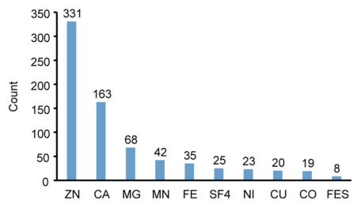
  <figcaption><b>Extended Data Fig. 1 |</b> Distribution of the metal types of the metalloproteins in the training set. ZN: zinc; CA: calcium; MG: magnesium; MN: manganese; FE: iron; SF4: [FE4-S4] iron-sulfur clusters; NI: nickel; CU: copper; CO: cobalt; FES: [FE2-S2] iron-sulfur clusters</figcaption>
</figure>
<figure class="paper-fig" id="figure-ed2" data-node="g902-209114">
  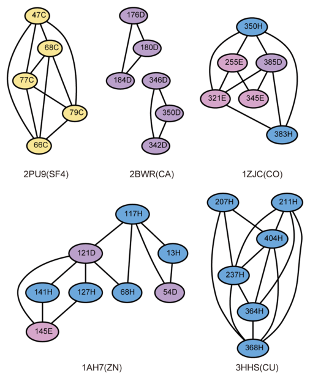
  <figcaption><b>Extended Data Fig. 2 |</b> Examples of the coevolved CHED network clusters detected in the PDB data. Metal-binding residues in these sites have the tendency to coevolve with each other and cluster together in a high-order coevolution network. The PDB ID and type of the metal ion bound are listed below the corresponding coevolved network</figcaption>
</figure>
<figure class="paper-fig" id="figure-ed3" data-node="g903-677a3b">
  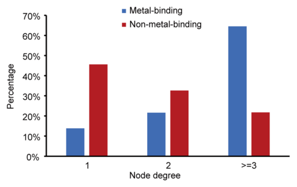
  <figcaption><b>Extended Data Fig. 3 |</b> Distribution of the number of coevolved connections (‘node degree’) for each residue among all the coevolved CHED pairs in the training set. The CHED residues involved in metal binding (blue) have more node degrees on average than those non-metal-binding residues in the coevolved networks (red)</figcaption>
</figure>
<figure class="paper-fig" id="figure-ed4" data-node="g904-3268fc">
  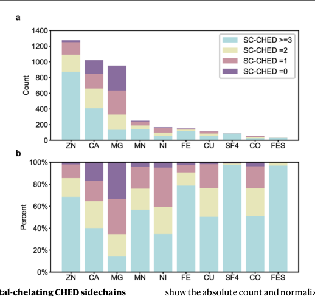
  <figcaption><b>Extended Data Fig. 4 |</b> Composition of metal-chelating CHED sidechains within the coordination sphere around each specific metal ion. The statistic is calculated based on metalloprotein structures in the benchmark. Figure a and b</figcaption>
</figure>
      </div>
      <section class="paper-refs" id="references">
        <h2>References</h2>
        <ol>
        <li id="ref-b0" value="1">Gladyshev V, Zhang Y. Comparative genomics analysis of the metallomes. Met. Ions Life Sci 2013</li>
        <li id="ref-b1" value="2">Waldron K, Robinson N. How do bacterial cells ensure that metalloproteins get the correct metal?. Nat. Rev. Microbiol 2009</li>
        <li id="ref-b2" value="3">Yannone S, Hartung S, Menon A, Adams M, Tainer J. 2012</li>
        <li id="ref-b3" value="4">Waldron K, Rutherford J, Ford D, Robinson N. Metalloproteins and metal sensing. Nature 2009</li>
        <li id="ref-b4" value="5">Cvetkovic A. Microbial metalloproteomes are largely uncharacterized. Nature 2010</li>
        <li id="ref-b5" value="6">Pace N, Weerapana E. A competitive chemical-proteomic platform to identify zinc-binding cysteines. ACS Chem. Biol 2014</li>
        <li id="ref-b6" value="7">Sevcenco A. Exploring the microbial metalloproteome using MIRAGE. Metallomics 2011</li>
        <li id="ref-b7" value="8">Andreini C, Banci L, Bertini I, Rosato A. Counting the zinc-proteins encoded in the human genome. J. Proteome Res 2006</li>
        <li id="ref-b8" value="9">Passerini A, Punta M, Ceroni A, Rost B, Frasconi P. Identifying cysteines and histidines in transition-metal-binding sites using support vector machines and neural networks. Proteins Struct. Funct. Bioinf 2006</li>
        <li id="ref-b9" value="10">Passerini A, Lippi M, Frasconi P. MetalDetector v2.0: predicting the geometry of metal binding sites from protein sequence. Nucleic Acids Res 2011</li>
        <li id="ref-b10" value="11">Haberal İ, Oğul H. Prediction of protein metal binding sites using deep neural networks. Mol. Inf 2019</li>
        <li id="ref-b11" value="12">Babor M, Gerzon S, Raveh B, Sobolev V, Edelman M. Prediction of transition metal-binding sites from apoprotein structures. Proteins 2008</li>
        <li id="ref-b12" value="13">Lin Y. MIB: metal ion-binding site prediction and docking server. J. Chem. Inf. Model 2016</li>
        <li id="ref-b13" value="14">Zhang C, Freddolino P, Zhang Y. COFACTOR: improved protein function prediction by combining structure, sequence and protein-protein interaction information. Nucleic Acids Res 2017</li>
        <li id="ref-b14" value="15">Gobel U, Sander C, Schneider R, Valencia A. Correlated mutations and residue contacts in proteins. Proteins 1994</li>
        <li id="ref-b15" value="16">Shindyalov I, Kolchanov N, Sander C. Can three-dimensional contacts in protein structures be predicted by analysis of correlated mutations?. Protein Eng. Des. Select 1994</li>
        <li id="ref-b16" value="17">Martin L, Gloor G, Dunn S, Wahl L. Using information theory to search for co-evolving residues in proteins. Bioinformatics 2005</li>
        <li id="ref-b17" value="18">. doi:10.1038/s41589-022-01223-z</li>
        <li id="ref-b18" value="18">Morcos F. Direct-coupling analysis of residue coevolution captures native contacts across many protein families. Proc. Natl Acad. Sci. USA 2011</li>
        <li id="ref-b19" value="19">Balakrishnan S, Kamisetty H, Carbonell J, Lee S, Langmead C. Learning generative models for protein fold families. Proteins 2011</li>
        <li id="ref-b20" value="20">Jones D, Buchan D, Cozzetto D, Pontil M. PSICOV: precise structural contact prediction using sparse inverse covariance estimation on large multiple sequence alignments. Bioinformatics 2012</li>
        <li id="ref-b21" value="21">Marks D, Hopf T, Sander C. Protein structure prediction from sequence variation. Nat. Biotechnol 2012</li>
        <li id="ref-b22" value="22">Ovchinnikov S. Protein structure determination using metagenome sequence data. Science 2017</li>
        <li id="ref-b23" value="23">Xu J. Distance-based protein folding powered by deep learning. 2019</li>
        <li id="ref-b24" value="24">Ovchinnikov S, Kamisetty H, Baker D. 2014</li>
        <li id="ref-b25" value="25">Cong Q, Anishchenko I, Ovchinnikov S, Baker D. Protein interaction networks revealed by proteome coevolution. Science 2019</li>
        <li id="ref-b26" value="26">Toth-Petroczy A. Structured states of disordered proteins from genomic sequences. Cell 2016</li>
        <li id="ref-b27" value="27">Chakrabarti S, Panchenko A. Coevolution in defining the functional specificity. Proteins 2009</li>
        <li id="ref-b28" value="28">Kuipers R. Correlated mutation analyses on super-family alignments reveal functionally important residues. Proteins 2009</li>
        <li id="ref-b29" value="29">Chakrabarti S, Panchenko A. Structural and functional roles of coevolved sites in proteins. PLoS One 2010</li>
        <li id="ref-b30" value="30">Jeong C, Kim D. Structure-based Markov random field model for representing evolutionary constraints on functional sites. BMC Bioinf 2016</li>
        <li id="ref-b31" value="31">Wang G, Dunbrack R. PISCES: a protein sequence culling server. Bioinformatics 2003</li>
        <li id="ref-b32" value="32">Anishchenko I, Ovchinnikov S, Kamisetty H, Baker D. Origins of coevolution between residues distant in protein 3D structures. Proc. Natl Acad. Sci. USA 2017</li>
        <li id="ref-b33" value="33">Altschul S, Gish W, Miller W, Myers E, Lipman D. Basic local alignment search tool. J. Mol. Biol 1990</li>
        <li id="ref-b34" value="34">Cariss S. YieJ (CbrC) mediates CreBC-dependent colicin E2 tolerance in Escherichia coli. J. Bacteriol 2010</li>
        <li id="ref-b35" value="35">Schneider K, Dimroth P, Bott M. Biosynthesis of the prosthetic group of citrate lyase. Biochemistry 2000</li>
        <li id="ref-b36" value="36">Will C, Luhrmann R. Spliceosome structure and function. Csh Perspect. Biol 2011</li>
        <li id="ref-b37" value="37">Charenton C, Wilkinson M, Nagai K. Mechanism of 5′ splice site transfer for human spliceosome activation. Science 2019</li>
        <li id="ref-b38" value="38">Zhang X. Structures of the human spliceosomes before and after release of the ligated exon. Cell Res 2019</li>
        <li id="ref-b39" value="39">Zhang C, Zheng W, Mortuza S, Li Y, Zhang Y. DeepMSA: constructing deep multiple sequence alignment to improve contact prediction and fold-recognition for distant-homology proteins. Bioinformatics 2020</li>
        <li id="ref-b40" value="40">Piazza I. A map of protein-metabolite interactions reveals principles of chemical communication. Cell 2018</li>
        <li id="ref-b41" value="41">Zhuang S, Li Q, Cai L, Wang C, Lei X. Chemoproteomic profiling of bile acid interacting proteins. ACS Cent. Sci 2017</li>
        <li id="ref-b42" value="42">Horning B. Chemical proteomic profiling of human methyltransferases. J. Am. Chem. Soc 2016</li>
        <li id="ref-b43" value="43">Jumper J. Highly accurate protein structure prediction with AlphaFold. Nature 2021</li>
        <li id="ref-b44" value="44">Baek M. Accurate prediction of protein structures and interactions using a three-track neural network. Science 2021</li>
        <li id="ref-b45" value="45">Cock P. Biopython: freely available Python tools for computational molecular biology and bioinformatics. Bioinformatics 2009</li>
        <li id="ref-b46" value="46">Steinegger M. HH-suite3 for fast remote homology detec tion and deep protein annotation. BMC Bioinform 2019</li>
        <li id="ref-b47" value="47">Exploring network structure, dynamics, and function using networkX. 2008</li>
        <li id="ref-b48" value="48">Huang Y, Niu B, Gao Y, Fu L, Li W. CD-HIT suite: a web server for clustering and comparing biological sequences. Bioinformatics 2010</li>
        <li id="ref-b49" value="49">Mirdita M. ColabFold: making protein folding accessible to all. Nat. Methods 2022</li>
        <li id="ref-b50" value="50">Hulsen T, De Vlieg J, Alkema W. 2008</li>
        <li id="ref-b51" value="51">Song Y. High-resolution comparative modeling with RosettaCM. Structure 2013</li>
        <li id="ref-b52" value="52">Wang C, Vernon R, Lange O, Tyka M, Baker D. Prediction of structures of zinc-binding proteins through explicit modeling of metal coordination geometry. Protein Sci 2010</li>
        <li id="ref-b53" value="53">Sheldrick G. Experimental phasing with SHELXC/D/E: combining chain tracing with density modification. Acta Crystallogr. D Biol. Crystallogr 2010</li>
        <li id="ref-b54" value="54">Adams P. PHENIX: building new software for automated crystallographic structure determination. Acta Crystallogr. D Biol. Crystallogr 2002</li>
        <li id="ref-b55" value="55">Emsley P, Cowtan K. Coot: model-building tools for molecular graphics. Acta Crystallogr. D Biol. Crystallogr 2004</li>
        <li id="ref-b56" value="56">Abraham M. GROMACS: high-performance molecular simulations through multi-level parallelism from laptops to supercomputers. SoftwareX 2015</li>
        <li id="ref-b58" value="57">Bussi G, Donadio D, Parrinello M. Canonical sampling through velocity rescaling. J. Chem. Phys 2007</li>
        <li id="ref-b59" value="58">Wang H, Dommert F, Holm C. Optimizing working parameters of the smooth particle mesh Ewald algorithm in terms of accuracy and efficiency. J. Chem. Phys 2010</li>
        </ol>
      </section>
      <nav class="paper-related">
        <h2>Earlier work from the lab cited here</h2>
        <ul>
        <li><a href="../2022-colabfold-making-protein-folding-accessible-to-all/">ColabFold: making protein folding accessible to all</a> <span class="yr">2022</span></li>
        <li><a href="../2021-accurate-prediction-of-protein-structures-and-interactions-using-a-thr/">Accurate prediction of protein structures and interactions using a three-track neural network</a> <span class="yr">2021</span></li>
        <li><a href="../2019-protein-interaction-networks-revealed-by-proteome-coevolution/">Protein interaction networks revealed by proteome coevolution</a> <span class="yr">2019</span></li>
        <li><a href="../2017-protein-structure-determination-using-metagenome-sequence-data/">Protein structure determination using metagenome sequence data</a> <span class="yr">2017</span></li>
        </ul>
      </nav>
    </article>
    </div>
  </main>

  <footer class="site-footer">
    <div class="footer-inner">
      <span><a href="https://web.mit.edu/">Massachusetts Institute of Technology</a></span>
      <span><a href="https://biology.mit.edu/">MIT Biology</a></span>
    </div>
  </footer>
  <script defer src="../../assets/js/msa.js"></script>
  <script defer src="../../assets/js/paper.js"></script>
</body>
</html>
